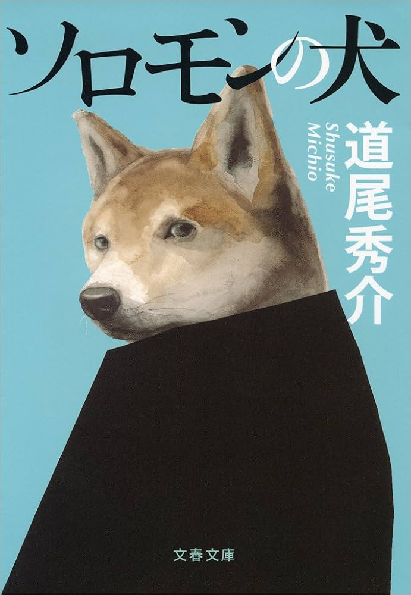

メディウム

死者と対話できるという特殊な設定を軸に展開する異色のミステリー。 超常的な要素と論理的な推理が絡み合い、独特の緊張感を生み出しています。 現実と非現実の境界を揺さぶる構成が印象的な一作です。
海外作家以外にも、日本で素晴らしい作品を作成している作家さんはたくさんいらっしゃいます。 中でも僕のお気に入りの作品を紹介します。
死者と対話できるという特殊な設定を軸に展開する異色のミステリー。 超常的な要素と論理的な推理が絡み合い、独特の緊張感を生み出しています。 現実と非現実の境界を揺さぶる構成が印象的な一作です。

冒密室殺人と天才的な論理がぶつかる、本格ミステリーの代表作。 理系的思考と哲学的なテーマが融合し、読み手に深い考察を促します。 トリックだけでなく、思考そのものを楽しめる作品です。

不穏で奇妙な空気に包まれた、強烈な印象を残すミステリー。 子どもの視点から語られる物語が、読者の常識を少しずつ揺さぶっていきます。 読み終えた後に独特の違和感が残る、異色の一冊です。

大学生たちの日常の中で起きた出来事が、思わぬ方向へ展開していく青春ミステリー。 軽快な会話と人間関係の描写がリアルで、物語に引き込まれます。 何気ない出来事の裏に潜む真実に気づいたとき、印象が大きく変わる作品です。
 一見すると恋愛小説のように進む、異色のミステリー作品。
物語の構成そのものに仕掛けがあり、読み終えた後にすべての印象が反転します。
再読したくなる巧妙なトリックが魅力の一冊です。
一見すると恋愛小説のように進む、異色のミステリー作品。
物語の構成そのものに仕掛けがあり、読み終えた後にすべての印象が反転します。
再読したくなる巧妙なトリックが魅力の一冊です。

再猟奇的な事件を描きながらも、読者の認識を巧みに操る心理ミステリー。 断片的な情報が積み重なり、真実へと近づく過程に強い緊張感があります。 ラストで明かされる事実が、物語全体の見え方を一変させます。

ミステリーの枠を超えた構成とテーマで、多くの読者を驚かせた作品。 物語の進行とともに価値観や前提が揺らぎ、意外な真相へと導かれます。 タイトルの意味が最後に深く響く、印象的な一冊です。
連続殺人犯の視点で語られるという、ユニークな構成のサスペンス。 読者の予想を裏切る仕掛けが随所に散りばめられています。 常識的なミステリーの枠を壊す大胆な展開が魅力です。

教師という立場を利用した狂気が描かれる、衝撃的なサスペンス作品。 日常の中に潜む恐怖が徐々に拡大していく構成が特徴です。 倫理観を揺さぶる展開と圧倒的な緊張感が読者を引き込みます。